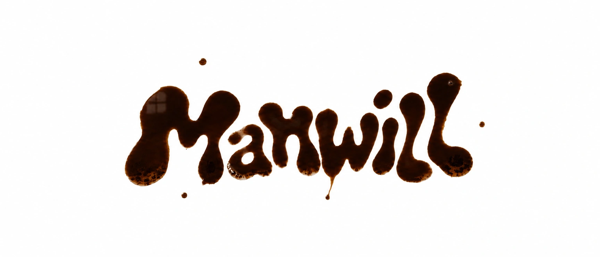
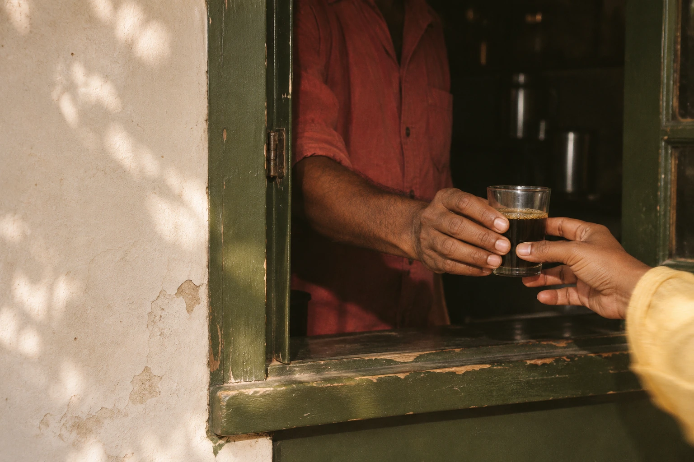
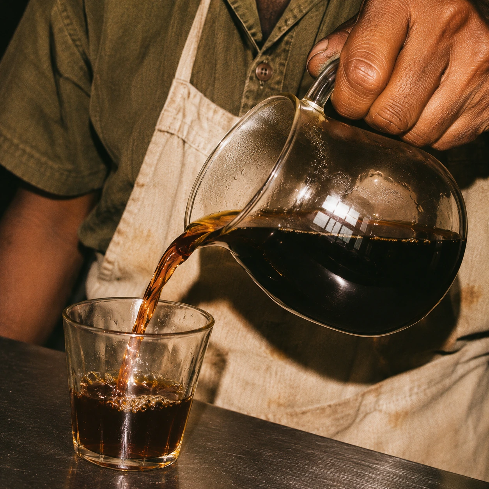
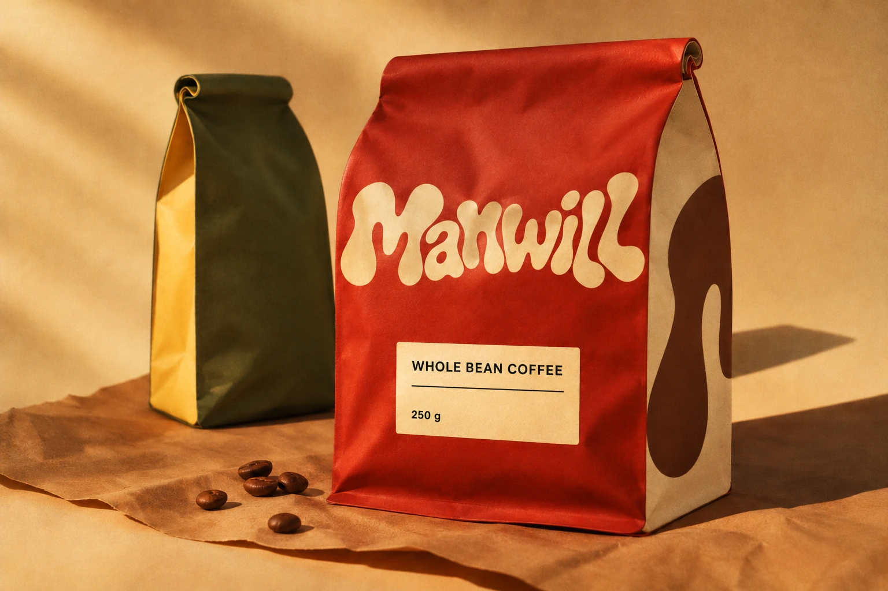
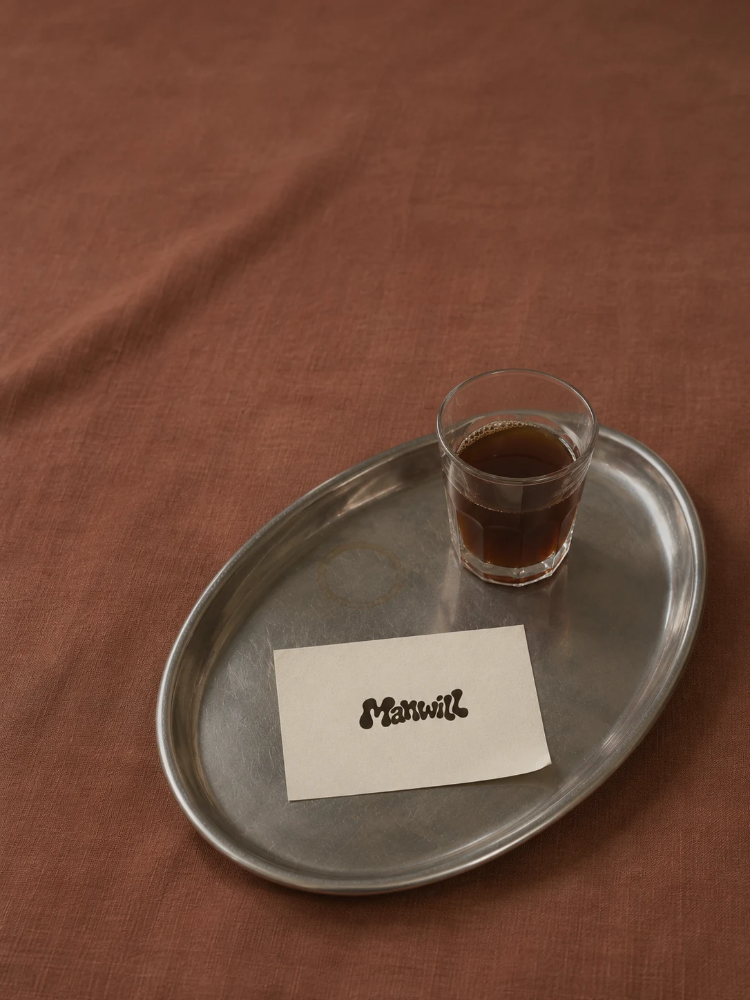

by the kettle.
Liked that cup?
Here’s where to start.
- Your coffee
- Your brewer
- Coffee / water
- Grind / time
Bring your questions back.

The coffee-lettering photograph is displayed.
A small counter makes coffee personal. This direction carries that feeling into Manwill’s identity, its photographs and the beans you take home.
Keep the red from the sign. Let the loose wordmark and close, grainy photographs do the rest.
The thinking behind it
“Strong” means something different to everyone. That’s a better conversation starter than a list of tasting notes.
The voice is curious and plain-spoken. The photographs stay close: hands, a glass passed over, the moment before a first sip.


The bean bag should feel like it came from the same place. A bold mark, familiar colours and room for each coffee’s details.
The lettering becomes a pattern on the side. A separate label can change with the coffee, while the bag stays recognisably Manwill.

A card filled in at the bar carries the conversation home. The useful details, written for the way that person makes coffee.
Bring your questions back.
A shirt that invites a question. A small card on the tray. The mark can be loud or quiet without becoming a different brand.


I can help shape the identity, packaging and photography into a coherent set of things you can use. I’d start with a conversation about the bar and the beans.